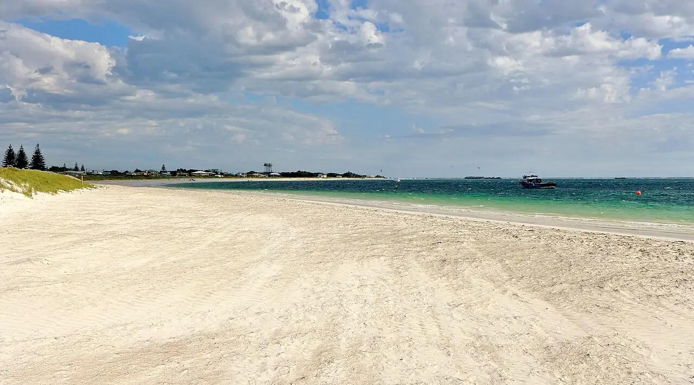

Lancelin
Australie-Occidentale, Australie · kitesurf, windsurf

Village de pêcheurs au nord de Perth, protégé par une barrière de récifs et d’îlots. La brise de mer de l’après-midi, régulière en été austral, en a fait une destination majeure du windsurf et du kitesurf.
- Lieu
- Australie-Occidentale, Australie
- Niveau
- Intermédiaire
- Activités
- kitesurf, windsurf
- Type d'eau
- Mer / océan
- Coordonnées
- -31.02, 115.33 (position approximative du secteur)
Dangers à connaître
- Brise forte et soutenue l’après-midi : adapte ta taille d’aile.
- Récifs peu profonds devant la côte.
Le conseil d'Ocean Buddy
Débute dans la partie abritée derrière le récif et laisse les zones de vagues du large aux riders expérimentés.
Ouvrir dans Ocean Buddy Télécharger sur l'App Store
Source : Fiche Ocean Buddy · septembre 2026 · à vérifier localement.